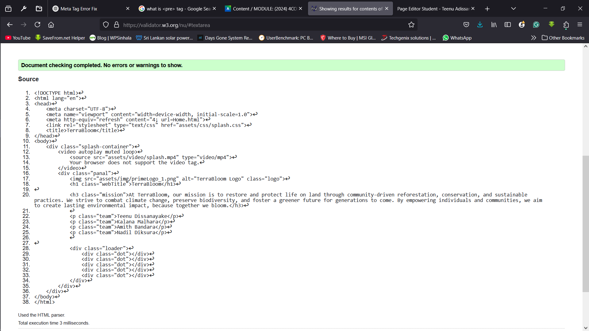
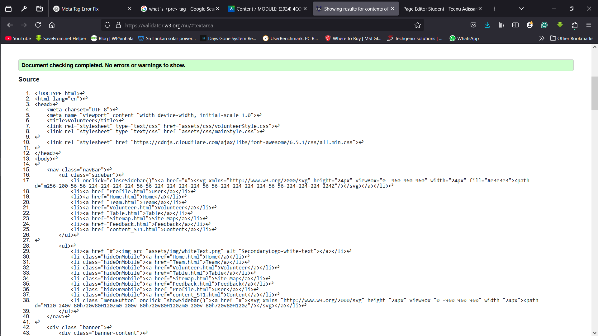
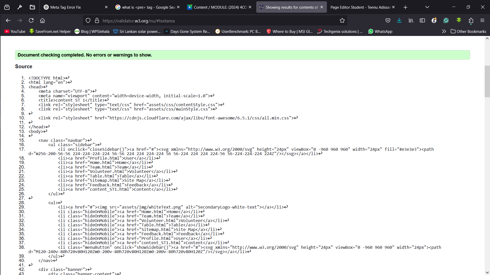

Splash Page validation report
At TerraBloom, we are passionate about restoring biodiversity and combating climate change through local community engagement. Our mission is simple yet powerful: Together We Bloom, Protecting Every Life on Land.
Back to Page Editor page
Editor Page - SplashVolunteer Page validation report
The Volunteer page includes an application form, a detailed FAQ section to answer common questions, and a rating form for volunteers to provide feedback on their experiences, helping us improve future programs.
Back to Page Editor page
Content Page validation report
The "Trash Makes Life Crash" page highlights the environmental impact of waste, raising awareness about pollution, its effects on ecosystems, and the importance of responsible waste management to protect our planet's future.
